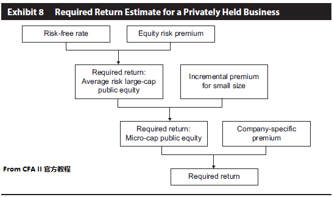

--------------------
Concepts
--------------------
- holding period return, HPR
- realized holding period return
- expected holding period return
- required return
- cost of equity
- cost of debt
- expected alpha = expected HPR - required return
- realized alpha = 真实HPR - 同期的 contemoiraneous required return
- 由内在价值估计得到的期望回报率估计
- mispricing
- increase, 低估超过25%
- stay the same, 低估不到25%
- be partially corrected, 低估不到15%
- be corrected, 估值准确
- overcorrected, 高估
- E(Rτ) ≈ rτ + (V0-P0)/P0
其中E(Rτ)=期望HPR, rτ=要求回报率
V0=内在价值, P0=价格
- discount rate
- 内部收益率
- 内在价值 = 年初股利 / (要求回报率 - 股利增长期望)
- 将内在价值用市场价格替换, 得到 要求回报率 = 年初股利 / 市场价格 + 股利增长期望
--------------------
权益风险溢价
--------------------
- 对全市场
- 权益要求回报率 re=rf+权益风险溢价
- 权益风险溢价=RM-rf
- 对特定share i
- re,i=rf+βi×权益风险溢价
- 或者 re,i=rf+权益风险溢价+其他风险溢价
- 历史估计
- 可以用历史估计的情况
- 指数稳定
- 期间越长数据样本越多, 但经济变化可能性越大
- 算术平均高估要求回报率与权益风险溢价, 几何平均低估要求回报率与权益风险溢价
- 长期国债低估要求回报率与权益风险溢价
- 有幸存者偏误, 需要下调修正 downward adjustment
- 前瞻性估计 forward looking estimation
- GGM估计, Gordon Growth Model Estimations
- GGM权益风险溢价 = 大盘分红比率 D1/P0 + 预期股市增长率g - 长期国债收益率
- 宏观经济模型估计 macroeconomic model estimation
- 宏观经济权益风险溢价=(1+g通胀)(1+g真实GDP)(1+gP/E)-1+收入部分EINC-期望rf
其中g通胀≈国债利率-通胀保值债券TIPS利率
g真实GDP用gEPS代替
gP/E代表公司股价被高估还是低估
- 调查问卷法
- 三者比较
- GGM, 优点: 对发达国家有效, 样本来源多, 数据有效; 缺点: 模型需要更新, 并且假设g恒定
- 宏观, 优点: 已证, 用当前数据数据易得; 缺点: 只用于发达国家
- Survey, 优点: 简单; 缺点: 对不同的群体调查结果不同
- 历史估计法和前瞻性估计法的对比
- 历史估计法, 优点: 无偏估计量, 客观; 缺点: 准确性, 难于保持稳定假设, 幸存者偏误, 反周期的风险溢价
- 前瞻估计法, 优点: 数据可得, 没有数据稳定性问题; 缺点, 过于主观, 受模型限制
--------------------
权益要求回报率
--------------------
- CAPM the capital asset pricing model
- re=rf+βi×权益风险溢价
- 两个基本假设
- 投资者都是风险厌恶的
- 投资者都基于组合的平均回报和回报的方差做投资决策
- 上市公司的β
- 影响真实β的两个选择
- adjusted β = 2/3 × unadjusted β + 1/3 × 1.0
抵消回归影响 beta drift
- 小盘股和非上市公司
- 去杠杆化βU ≈ [1/(1+D/E)]βE
- 杠杆化βE ≈ (1+D/E)βU = (A/E)βU
- 步骤
- 选定benchmark
- 估计benchmark的beta
- 用去杠杆化公式求得βU(同时用于benchmark和公司)
- 用杠杆化公式求得公司βE
- 多因素模型 multifactor models
- risk premium = factor sensitivity β × factor risk premium
- FFM, the fama-french model
- ri=rf+βmkt×权益风险溢价+βsize×SMB+βvalue×HML
- βmkt, 代表市场风险, 大于1, 该股风险大于市场风险; 小于1, 该股风险小于市场风险
- βsize, 代表规模, 大于0, 小市值; 小于0, 大市值
- βvalue, 代表公司风格, 大于0, 价值型; 小于0, 成长型
- PSM, the Pastor-Stambaugh模型, FFM的扩展
- 比FFM额外增加βLIQ×LIQ
- βLIQ流动性beta, 基准为0
- LIQ, 流动性因素
- 宏观经济与统计的多因素模型
- ri=T-bill rate
+ confidence risk 溢价
- time horizon risk 溢价
- inflation risk 溢价
+ business-cycle risk 溢价
+ market-timing risk 溢价
- market-timing risk 表示前面四个risk不能解释的问题
- 累加法 build up apporaches
- 私企累加法
- ri=rf+权益风险溢价+规模溢价+公司特定溢价

- 债券收益加风险溢价
- ri = 长期YTM+风险溢价 = r通胀+r真实+违约风险溢价
- CAPM, 多因素, 累加法比较
- CAPM, 优点: 简单, 仅一个因素; 缺点: 但解释力弱
- 多因素, 优点: 解释力强; 缺点: 更复杂
- 累加法, 优点: 简单, 可用于非上市公司; 缺点: 历史值可能不适用现在的市场环境
- 国际投资问题
- 汇率风险
- 数据与模型问题
- 国家风险溢价
- 国家风险评级模型
--------------------
WACC
--------------------
-
- WACC = 债务MV/(债务MV+权益MV) × 债务要求回报率 rd × (1-t) + 权益MV/(债务MV+权益MV) × re
= D/A × 债务要求回报率 rd × (1-t) + E/A × re
- 折现率的选择
- 对什么的折现选择什么折现率
- 对权益的CF折现, 用股票的要求回报率折现
- 对公司整体, 用WACC折现
- 名义CF, 用名义折现率
- 实际CF, 用实际折现率
--------------------
Next Chaptor